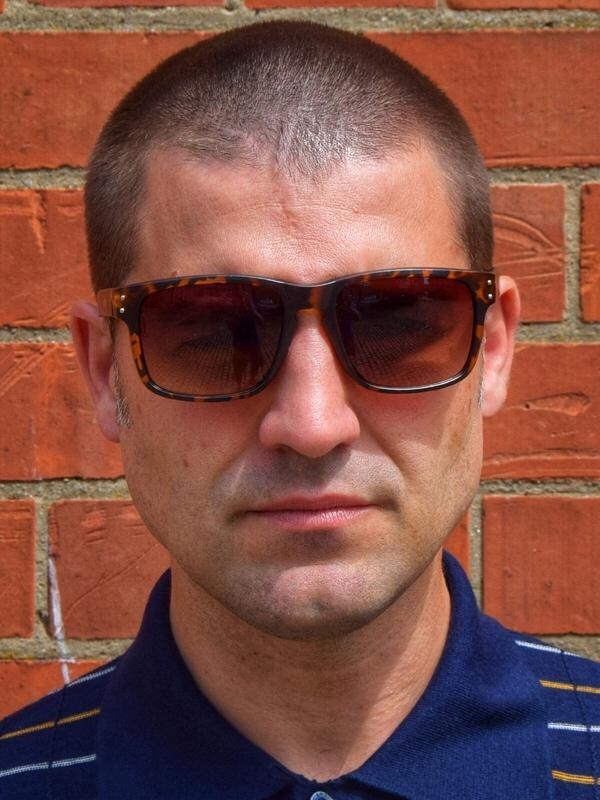
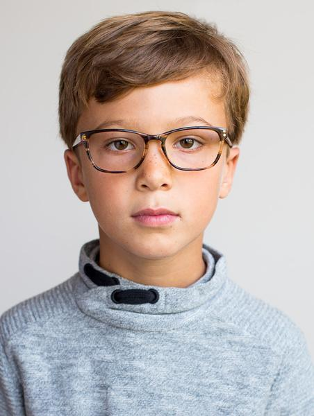

This may inspire you!
When Claire was 18 years old, her parents heard the heartbreaking words “Claire has Leukemia.” Claire didn’t know that Leukemia meant cancer and her parents immediately feared the worst.Within 48 hours of her diagnosis, Claire was admitted to the hospital for treatment. She had a central line put in and started the first of many rounds of chemotherapy. During the process it was discovered that Claire’s Leukemia had a genetic marker that made it even harder to treat, more likely to come back and presented only a 20% cure rate. At this point it was decided to treat her as aggressively as possible.Claire fought hard to stay healthy but eventually the chemotherapy took its toll on her little body. During her treatment she received more than 60 blood and platelet transfusions and a bone marrow transplant. Watching the color come back to Claire’s face while receiving donated blood made her parents realize the huge role donors play in the recovery of cancer patients. Today, Claire is in good health and is hopeful to stay in remission and is grateful for her lifesaving donors. “Thank you for helping me fight cancer.”
I would like to share my personal experience that I went through when my mom was admitted in the hospital in Chennai, India. One of the young doctors from the hospital voluntarily came forward to donate blood for her and this was the most touching moment in my life. From that moment on I decided to donate blood as frequently as possible. There is no substitute for human blood. Blood cannot be manufactured it can only come from generous souls. Further, my mom’s incident made me strongly believe that today’s donor may be tomorrow’s recipient. One thing that's true is that without the humane gifts from noble donors many lives might be lost for want of blood. Therefore, the most generous and biggest contribution to mankind is blood donation. The gift of blood is the gift of life!
“I had one foot in the grave and the other on a banana peel,” as Sara remembers the day blood donors saved her life. Her day started joyously. She had just delivered her youngest daughter, a beautiful, healthy 7lb 5oz baby girl. As she listened to her daughter’s first cry and the comments of the nurses, she began to feel very dizzy. When the nurses asked if she wanted to hold her baby, she told them she didn’t feel well enough. Then her world went black. Sara suffered a massive post-partum hemorrhage. She lost consciousness and the medical team rushed her into surgery where they discovered she had a substantial tear in her uterus. Sara had lost so much blood that her internal organs were also hemorrhaging as her body began to shut down. As they struggled to stop the bleeding and save Sara’s life, doctors transfused a total of 12 pints of blood and 8 pints of platelets. Sara knows it is truly a miracle that she is alive today and that blood donors made that miracle happen. “If not for these donors I would never have been given the chance to hold my daughter or watch her grow up.” Sara has been a blood donor since she was a senior in High School and continues her mission to replenish the supply that helped saved her life!
At eight hours old, Logan received his first blood transfusion. When he was born he was not breathing. The doctors were able to stabilize him, but Logan’s mom Amanda knew something was still not right. He had a low temperature and was pale, lethargic and not nursing. Logan’s hemoglobin levels were extremely low and when he stopped breathing again, he was rushed to another hospital. Logan then spent the first month of his life in neonatal intensive care and received four blood transfusions, but doctors still didn’t know what was causing his condition. He then began care with a hematologist and continued to receive weekly transfusions. When he was three, Logan was finally diagnosed with Pyruvate Kinease Deficiency (PKD) with an unknown mutation. PKD is a bone marrow enzyme deficiency that results in the production of ill formed or immature red blood cells. To make matters worse, Logan’s spleen saw his own red cells as a threat and was attacking them. Removing his spleen allowed for longer periods of time between transfusions but made him more susceptible to infections. At this time, there is no cure for Logan and he will need blood transfusions for rest of life. He also takes daily medicine to help deplete the extra ferritin (iron) and fight off potential airborne illnesses. During the first seven years of his life, Logan has received approximately 110 blood transfusions. He now needs blood every six to eight weeks, just about the same time span a donor needs to become eligible again (56 days). Despite all of this, Logan is a happy and playful child. He’s also very thankful. “Thank you for giving me blood and keeping me alive,” says Logan.